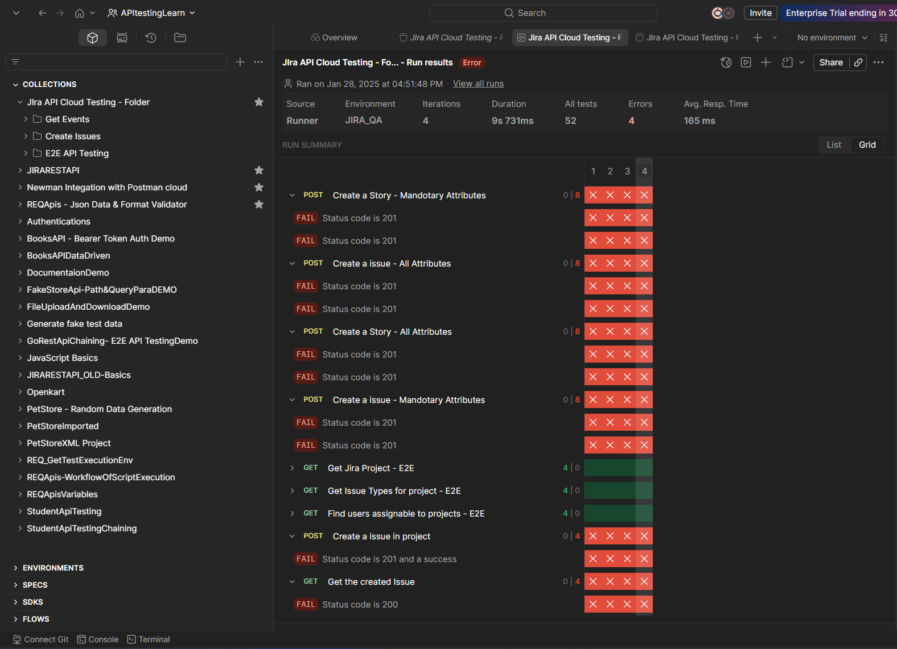
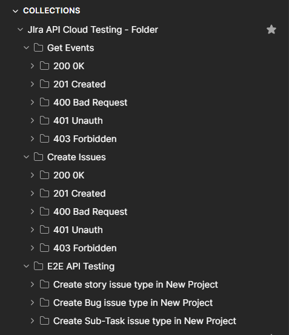
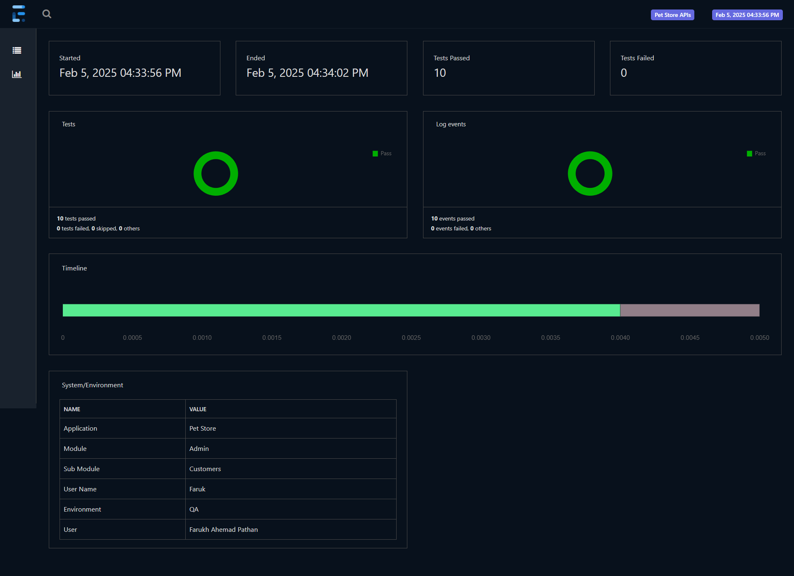
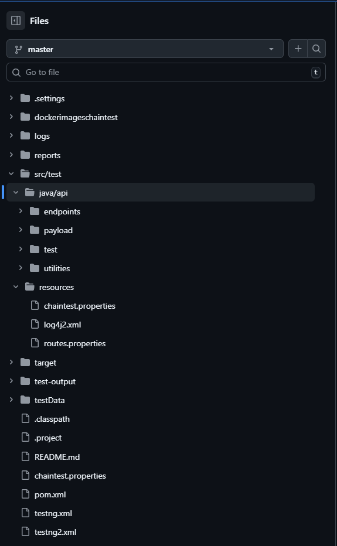
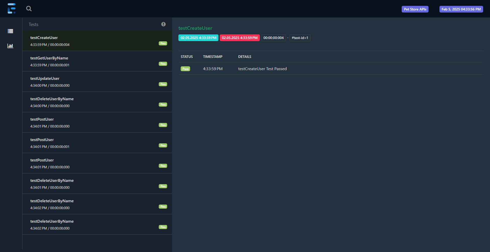

Enterprise-focused API validation, automation framework design, and CI/CD execution strategy
API Testing Automation Using Postman and RestAssured with Java and CI/CD
This artifact demonstrates my API testing capabilities across exploratory validation, automation scripting, and pipeline-driven execution for fast and reliable backend quality checks.
This artifact is built from five repositories that cover both collection-driven testing and Java automation: PetStore API automation framework, RestAssured fundamentals, Jira Cloud API collection, OpenKart end-to-end Postman flow, and Postman testing notes. The implementation includes collection scripts, Java test classes, environment files, reporting outputs, and framework folder organization.
Build maintainable API test suites that improve defect detection speed, enable repeatable regression checks, and support release confidence through CI/CD integration.
Defined endpoint-level scenarios (positive, negative, auth, and data integrity), prototyped requests and JavaScript assertions in Postman, exported stable cases to regression collections, automated core flows in RestAssured Java, used POJO-based serialization/deserialization for request/response mapping, validated JSON object fields with JsonPath assertions, and structured execution for Newman and CI/CD runs.
Postman, JavaScript test scripts, Newman report generation, RestAssured, Java, Maven, TestNG, POJO classes, JsonPath/JSON object validation, Excel-driven test data strategy, Git, GitHub repositories, GitHub flow workflow, and Jenkins-based CI/CD execution.
This artifact demonstrates a practical migration path from manual API checks to maintainable automation: quick Postman validation for discovery, RestAssured Java for scalable regression, and report-driven pipeline feedback for release decisions.
It combines both API prototyping/collection testing (Postman) and code-first automation (RestAssured Java), creating a complete workflow from quick checks to scalable automation suites.
Relevant for QA leads, SDETs, and engineering teams looking for API testing ownership across framework design, automated validations, and CI/CD readiness.
Project repositories listed below: RestAssuredPetStoreAutomation, RestAssuredBasics, Jira_Cloud_API, openkart_api_testing, and APITesting_Postman.
Coverage includes endpoint contracts, status code assertions, response headers, response-time checks, and business-level data assertions. Scenarios are organized across create/read/update/delete patterns and cross-entity flow validation.
The RestAssuredPetStoreAutomation repository shows a structured framework with src/test, testData, reports, logs, testng.xml, and pom.xml. This structure supports reusable request setup, test execution control, and report traceability.
Jira_Cloud_API and openkart_api_testing repositories provide collection and environment assets that accelerate early validation. Stable, repeatable checks are then promoted to Java automation for version-controlled regression coverage.
Execution is designed for Jenkins and GitHub pipeline patterns where suites can run on code changes or scheduled builds. Newman reports and automation output provide actionable pass/fail feedback to development teams.
API scenario design, JavaScript assertions in Postman, RestAssured Java framework design, POJO modeling, JSON object validation, test data strategy using Excel inputs, report analysis, and CI/CD-aligned test operations.
This project is the core automation implementation. The repository includes framework-level assets such as src/test, testData, reports, logs, pom.xml, and testng.xml. The structure reflects scalable API automation practices where suites, test data, and execution reports are separated for maintainability.
Validation strategy includes request payload checks, response code verification, field-level JSON assertions, and reusable model handling through POJO classes. This supports robust regression execution instead of one-off endpoint checks.
In Jira_Cloud_API and openkart_api_testing, I maintained importable collections and environment files to run practical end-to-end API scenarios. This was useful for quickly validating authentication flow, request chaining, variable passing, and endpoint behavior before full Java automation.
Postman JavaScript tests were used for inline assertions and quick diagnostics. For repeatable execution and reporting, the workflow is aligned with Newman-based report generation.
RestAssuredBasics supports foundational request/response learning and reusable assertion patterns. APITesting_Postman captures practical notes and scripts for API validation. Together, these repositories represent progression from learning-level exercises to framework-level implementation.
Across the portfolio, the test design emphasizes JSON object data validation, POJO usage for cleaner payload mapping, and data-driven testing patterns (including Excel-backed input planning where needed for repeated scenario permutations).
The automation approach is prepared for CI/CD using Jenkins and GitHub workflows: maintain test assets in version control, execute suites on demand or schedule, and publish reports for release-level decision making. This closes the loop between development commits, automated validation, and fast quality feedback.
The gallery below shows five API testing artifacts. Click any card to open the full image.

Jira APIs - Automation Report

Jira API - Postman Collection

PetStore API - Graphical Report

RestAssured - Folder Structure

PetStore API - Execution Evidence
My API testing journey taught me that effective automation is not only about faster validation, it is about creating confidence in the backend systems that power business workflows. Across projects at HCL Technologies, Infosys, and Quest Diagnostics, I focused on making API quality measurable, repeatable, and dependable through strong design and disciplined execution.
Moving from manual endpoint checks to framework-driven testing changed my perspective on quality engineering. Postman collections helped accelerate exploratory and integration flow checks, while RestAssured frameworks brought structure, reuse, and maintainability through POJO models, reusable utilities, and robust JSON assertions. This combination enabled both speed and long-term scalability.
Integrating CI/CD through Jenkins and Newman reinforced the value of continuous feedback. When API suites are versioned, automated, and reported consistently, teams detect issues earlier, reduce release risk, and collaborate better across QA, development, and DevOps. I also leveraged AI tools like GitHub Copilot and ChatGPT to improve scripting efficiency, while keeping test design quality as the core priority.
Going forward, I aim to build more resilient API quality systems with stronger contract validation, smarter coverage strategies, and shift-left testing practices. My guiding principle remains constant: design for clarity, automate for consistency, and use data-driven feedback to improve product quality in every release cycle.